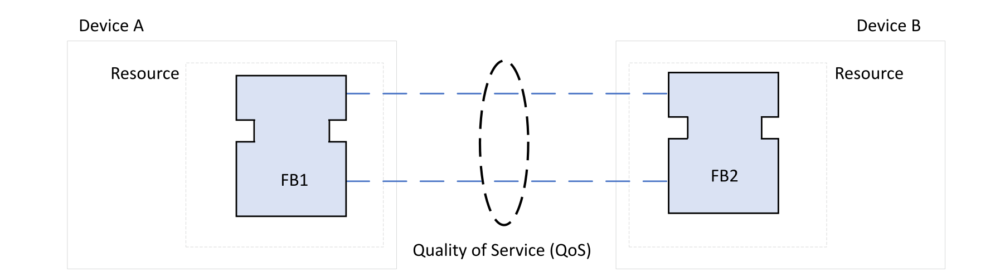

In accordance with the IEC 61499 standard, control applications developed with EcoStruxure Automation Expert can be distributed across multiple interconnected devices.
Cross-communication links can be established:
Between two dPAC devices
Between a dPAC device and an HMI device.
Cross-communication is supported by Schneider Electric distributed PAC devices, except for HA Soft dPAC.
Whenever an event or data output on a function block mapped to one dPAC device is joined to an event or data input on a function block mapped to a different device, EcoStruxure Automation Expert creates a cross-communication connection between the two devices and transparently manages communication between them.

Enabling and configuring the QoS requires the support of Reliable Cross Communication from the devices.
Use the Communications Network editor to monitor and configure cross-communication connections.
Cross-communication between dPAC devices is based on the User Datagram Protocol (UDP) standard.
UDP does not support a native acknowledgment feature, so event monitoring must be handled at the application level. Refer to the Application Design Guidelines for information on Handling Potential Cross-communication Event Loss.
Cross-communication links can be established between dPAC devices running on different networks. Use the Physical Devices editor to configure the dPAC devices to enable device discovery on cross-communication links.
Value, Time, Quality (VTQ) data can be configured on the function block inputs and outputs. This VTQ data provides timestamping and connection quality data. Whenever a connection is lost, the VTQ data is updated and all events configured with VTQ data are triggered. This VTQ data can then be used by the application for monitoring purposes and to take the appropriate action.
VTQ data is described in Value, Time, Quality Data Types.
EcoStruxure Automation Expert supports a variety of HMI devices running under Windows and other multiplatform operating systems, including both dedicated HMI devices, such as Harmony ST, and workstations with EcoStruxure Automation Expert – HMI Client software installed.
HMI devices are connected to dPAC platforms using a standard Ethernet network. The WebSockets communications protocol is used to maintain a bidirectional TCP connection between the dPAC platforms and the HMI Client/EcoRT runtime application.
For details on creating and deploying applications to HMI devices, refer to the HMI - User Guide topic Introducing the EcoStruxure Automation Expert - HMI Client.